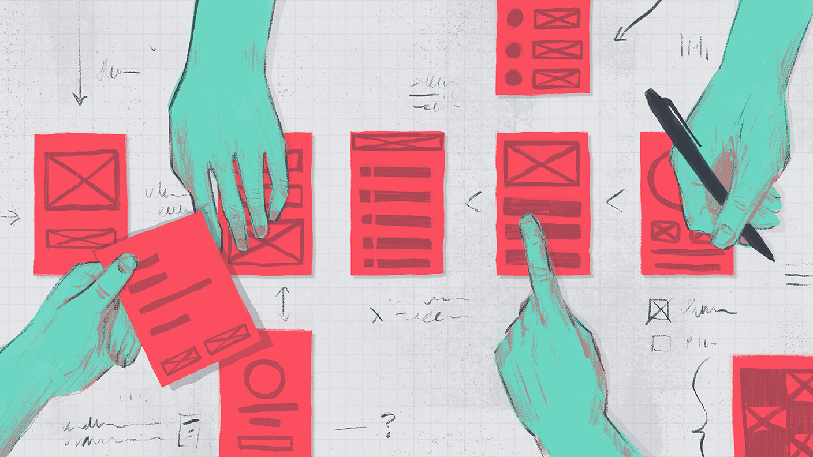

|
Atualizações do Adobe Experience Design |
| Sumário da atualização semanal: |
| Tutorial semanal |
| Entrevista |
| Novo vídeo no Youtube |
|  |
| Crie designs para aplicativos da Web e móveis no MacOS e Windows 10. |
| Saiba como é fácil usar as ferramentas de design focadas em User Experience do Adobe XD, com Repeat Grid, juntamente com ferramentas de desenho vetorial. |
| Saiba mais › |
| Crie e compartilhe protótipos interativos direto do Adobe Experience Design. |
| Valide a experiência do usuário adicionando animações interativas a projetos estáticos no Adobe Experience Design CC (Beta). |
| Saiba mais › |
| O que você você pode fazer com o Adobe XD (Beta). |
| Projetar e prototipar de sites e aplicativos móveis com o Adobe Experience Design CC (anteriormente chamado Project Comet), a primeira ferramenta tudo-em-um para designers UX. |
| Continue assistindo › |
| Acompanhe-nos nas redes sociais: | |
| Não quer mais receber nossos emails? Desinscreva-se aqui |